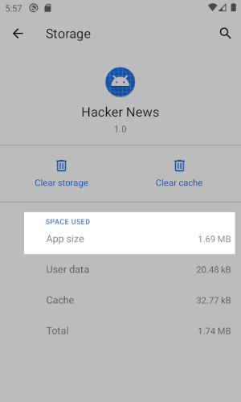
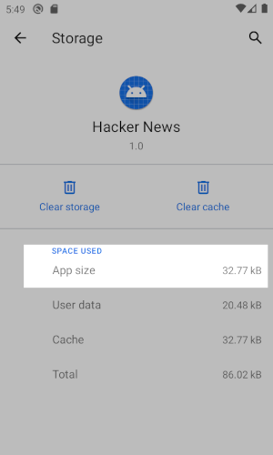
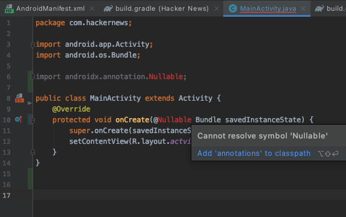
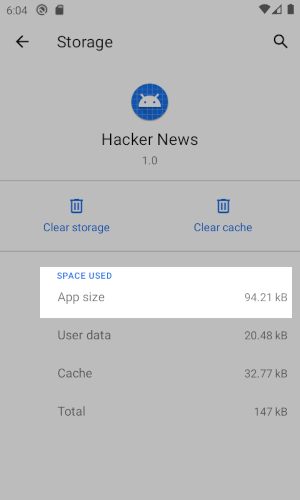
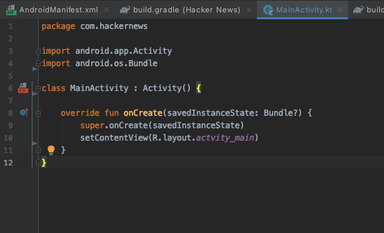

Writing a minimalist Android client, part 1
Mar 7, 2021
So I was reading recently a nice article called “The small web is beautiful” which got me inspired to take this concept to Android apps. For a long time already, I’ve used Boost to read posts on Reddit and I wanted to build something similar that would make reading comments on Hacker News just as pleasant. So in this series of articles, I’ll show all the process I’ve used to create a simple Android app to browse Hacker News and read the comments. But I’ll be trying to make as small as possible, for as long as it’s reasonable to do so.
Bloated apps: a little bit of context
Android apps have suffered for a long time from the fragmentation problem, and to solve that Google has been gradually focusing on moving functionality from the Android APIs to their Support Library (currently rebranded to Android Jetpack). If you don’t know what Android Jetpack is, here’s the description in Google’s official website:
Jetpack is a suite of libraries to help developers follow best practices, reduce boilerplate code, and write code that works consistently across Android versions and devices so that developers can focus on the code they care about.
So basically, the Support Libraries contained a lot of features back-ported to older versions of Android and made sure some features behaved the same way across different versions of Android. The new Jetpack libraries do the same, but also contain some extra stuff that aim to standardize the way most apps are built. The problem with this approach is that a lot of code gets embedded in the apps instead of using the already available functions in the Android system itself.
Starting the project
When you first create an Android app on Android Studio, it automatically adds some Android Jetpack libraries in your app, but those libraries basically make your app too big for our concept of “tiny app”. I removed everything that’s not really necessary (including the standard icons) to see what it looks like after installed:

1.69MB! That’s not tiny for an app that only shows “Hello world” in the screen.
So for a start I wanted to know how small a modern Android app can be without any boilerplate or libraries. This would set our bar for future comparisons. For this purpose we’re going to start without any libraries or unnecessary dependencies, which means we’re going to ditch the whole Google’s libraries (at least for now…).
Running again we have:

Less than 33KB, that’s much better!
Although this size is good, we’d need to make a lot of
sacrifices to code like this. One of the problems is that,
without the Google libraries, we simply can’t use the
@Nullable and @NotNull annotations
in our code.

How can someone program Java without nullable?
Yeah, that’s pretty bad, but even with Proguard enabled I don’t want to use the Android Jetpack libraries unless I absolutely need them at some point.
Kotlin to the rescue?
My first thought was to start building the app in Java
because I was sure that adding the Kotlin runtime would also
increase the app size too much. But as anything in
programming goes like, testing is the most reliable way to
check any hypothesis. I used Android Studio to configure
Kotlin in the project and convert my MainActivity to a
.kt file just to see what the app size would
be:

94.21 KB! That’s a small price to pay for the benefits of the Kotlin language.
So it turns out that adding the Kotlin runtime doesn’t actually bloat the app a lot, as long as Proguard is activated and removing all unused code. The first and main benefit of using Kotlin is that I know which objects can be null or not without using Java annotations directly in my code.

Kotlin knows and enforces that savedInstanceState is a nullable Bundle.